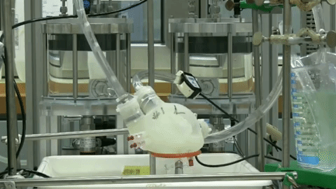

<meta charset="UTF-8">
    <meta name="viewport" content="width=device-width, 
initial-scale=1.0">
    <meta http-equiv="X-UA-Compatible" content="ie=edge">
    <title>Document</title>

<section class="seccion_1">
        <div class="home-about-area">
            <div class="container">
                <div class="row">
                    <div class="col-lg-7 col-md-7 col-sm-7 col-xs-12">
                            <div class="about-images">
                                    <a href="#"></a>
                                </div>
                        <div class="about-content">
                            <div class="section-title">
                                <h3 class="seccion_titulo">Se logra 
imprimir un corazon artificial funcional</h3>
                                <h4 class="seccion_subtitulo"></h4>
                            </div>
                            <p>
                                    La investigación realizada por la 
Universidad de Tel Aviv, en conjunto con Technion lograron imprimir un 
corazon con tejido humano, que funciona como uno original. <br>
                                    El resultado de esta investicacion 
es impactante no solamente por el logro, sino tambien porque con la 
evolución de la tecnología se podrán obtener corazones de tamaño humano, 
que al ser impresos con tejido del propio paciente, no generará rechazo. 
<br>
                                    Actualmente existen miles de 
pacientes quienes mueren todos los dias esperando el organo que les hace 
falta y les salvara la vida, y a causa de la falta de donantes como 
tambien los altos costos de implementos mecanicos, pierden la vida. <br>
                                    Los avances y estudios que son 
realizados actualmente en las universidades, se espera que brinden una 
mayor esperanza de vida, utilizando la tecnologia de la impresion 3d. 
<br>
                                    A mediados de abril, la Universidad 
de Tel Aviv anunció que uno de sus equipos de investigadores había 
logrado un "gran hito médico", la impresión del primer corazón 3D 
utilizando las células y los materiales biológicos del paciente, 
incluyendo los vasos sanguíneos, una verdadera novedad en medicina 
regenerativa.
                            </p>
                        </div>
                    </div>
                    <div class="col-lg-5 col-md-5 col-sm-5 col-xs-12 
hidden-xs">
                        <div class="about-images">
                        <!--    <a href="#"></a>-->
                        </div>
                    </div>                    
                </div>
            </div>
        </div>
    </section>
